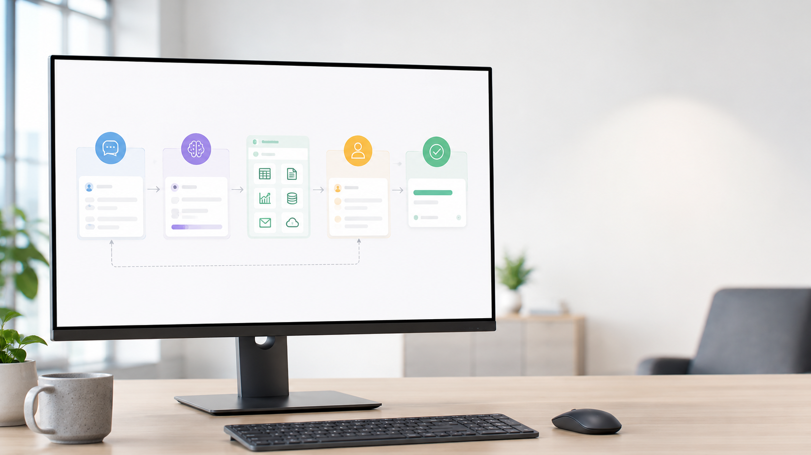

日本ビジネスメール協会「ビジネスメール実態調査2025」によると、ビジネスパーソンは1日平均52.27通を受信し、メールの送受信だけで1日約2時間26分を費やしています。添付ファイルの保存・シートへの転記・フォルダ整理まで含めると、負担はさらに大きくなります。
※出典：一般社団法人日本ビジネスメール協会「ビジネスメール実態調査2025／2024」
2025年11月にGoogleが公開した、Gemini 3搭載の「エージェント・ファースト」型プラットフォーム。人が操作するツールではなく、AIエージェントに仕事を任せて人は監督するという設計思想で作られています。2026年5月のメジャーアップデート（2.0）で、Google Workspaceとのネイティブ連携が加わりました。
エディタ・ターミナル・ブラウザを横断してエージェントが動作。ファイル操作からWeb画面の操作まで、PC上の作業を一気通貫で実行します。
2.0世代でGmail・カレンダー・Drive・Docs・Sheetsとの公式連携に対応。Google Cloud側の初期設定（API有効化・OAuth認証）を済ませれば、追加のプログラム開発なしで連携できます。
作業計画・スクリーンショット・ブラウザ操作の録画を「Artifacts」として自動生成。AIが何をしたか人間が検証でき、安心して任せられます。
最新のGeminiモデル（Gemini 3.x系）を中心に、複数のモデルから選択できます（2026年6月時点・対応モデルは随時更新）。無料枠で試せますが、無料の利用上限は縮小傾向のため、日常利用は有料プランが現実的です。
2026年6月14日、専門知識ゼロの状態から約60分でGoogle Workspace連携を実構築。Googleカレンダーの予定読み取りまで成功しました。しかも送信・削除の権限を一切持たない読み取り専用の安全構成です。下は実際の結果です。
今回の構築手順を、専門用語ぬきの「導入ガイド」にまとめました。クリックとコピペだけで、同じ状態まで到達できます。費用は0円（無料枠）、所要約60分です。
導入ガイドを開く下記は、実機で動かした「ダッシュボード生成」「メール自動仕分け」の出力を、社外提示用に業務例へ匿名化して再現したものです（構成・粒度は実物どおり）。
| 至急 | 5件 | 見積・請求・納期の要対応 |
| 通常 | 4件 | 社内連絡・報告 |
| 情報共有 | 11件 | メルマガ・通知（自動でまとめ） |
※2026年6月14日に実機検証。個人Googleアカウント＋読み取り専用スコープ（gmail.readonly 他）での実測です。上の出力イメージは社外提示用に匿名化・業務例へ置き換えた再現で、生データではありません。書き込み（メール下書き・シート追記）はPhase 2でスコープを追加し段階的に解放します。
いきなり全自動を目指すのではなく、効果が出やすく失敗しない“型”から導入します。すべて声かけ1回で完結し、書き込みが必要な操作は人の承認を挟みます。
予定・重要メール・要返信・関連資料を集約し、優先ToDoを提案。出社して最初の5分で一日が見渡せます。
今日のダッシュボードを作って次の会議の参加者・関連メール・過去議事録・資料を横断収集し、アジェンダ案まで用意します。
次の会議の準備をしてメモから議事録を整形し、決定事項・ToDoを抽出。お礼や確認の返信は下書きとして用意（送信は承認制）。
このメモを議事録にして返信下書きも走り書きメモから日報・次アクション・CRM入力文を整形し、スプレッドシートに1行追記します。
このメモを日報にしてシートに記録※①②は読み取りのみで完結。③④の書き込みは「下書き作成・新規追記」に限定し、送信・上書き・削除はしない設計です。
Antigravity 2.0のネイティブツール＋ローカルファイル操作＋ブラウザエージェントの組み合わせで、ご相談いただいた業務はすべてカバーできます。それぞれの実現方法と精度を正直にご説明します。
ネイティブGmailツールで受信トレイを読み取り、内容ベースで判断します。件名だけでなく本文を理解して仕分けるのがルールベース自動化との決定的な違いです。
ネイティブSheetsツールで行追加・セル更新・数式の挿入まで実行。メールやCSVからの転記作業を会話だけで完結できます。
AntigravityはPC上で動くため、ローカルフォルダの操作はもっとも得意な領域です。明細・見積書・請求書を内容で判別し、ルールどおりに整理します。

ご相談の4業務以外にも、バックオフィスで即戦力になる機能が揃っています。いずれも公開事例・公式ドキュメントで確認できたものです。
クリック・入力・スクロールを自動実行し、操作過程を録画で残せます。競合サイトの価格チェック、SaaS管理画面への定型入力、Webフォームの一括登録などに。普段のChromeとは隔離された専用プロファイルで動作します。
作業手順をMarkdownで書いておくと「/週次レポート」のようなコマンドとして呼び出せます。週次レポート作成、月初の請求処理など、繰り返し業務をプログラミングなしで定型化できます。
「敬語のトーン」「ファイル命名規則」「やってはいけないこと」をRulesに書いておくと全作業に自動適用。Skillsに専門知識を登録しておけば、必要な時だけ呼び出されます。
カレンダー＋Gmail＋Driveを横断し、「今日の予定・要対応メール・関連資料」をまとめた日次ブリーフィングをDocsに自動出力。公式ガイドでも紹介されている代表的ワークフローです。
管制塔画面（Agent Manager）から複数のエージェントに別々の仕事を同時に任せられます。「Aは市場調査、Bは資料たたき台作成」のような並行作業で、待ち時間を大幅に削減します。
内部でPythonスクリプトを自動生成して実行するため、プログラミング知識なしでデータ分析・グラフ作成・自分専用の業務ミニツール開発まで「丸投げ」できます。
「このフォルダの議事録と過去の成功事例を読んで、新規顧客向け提案書のたたき台を作って」のように、フォルダ内の文脈を理解した文書生成ができます。
Antigravity CLIとOSのタスクスケジューラを組み合わせ、毎朝8時のメール整理・毎週金曜のレポート生成など、人がいなくても回る定時バッチとして運用できます。
Slack・Notion・GitHubなど、ネイティブ対応外のサービスもMCP Storeからワンクリックで接続可能。MCPは業界標準規格のため、対応サービスは継続的に増えています。
同じAntigravityでも、部門によって“刺さる業務”は違います。代表的な4部門の活用例です。まずは1部門・1業務から小さく始め、効果を見て広げます。
いずれも公開事例のある実証済みの使い方です。実現手段（ネイティブ／ブラウザ操作／ローカル処理）によって安定度が異なるため、正直に評価を付けています。
| 業務 | 実現度 | 実現手段 | 補足 |
|---|---|---|---|
| メール要約・仕分け・返信下書き | 高い | ネイティブGmailツール | 読み取り＋下書きまで。送信は人の承認を挟む運用を推奨 |
| スプレッドシート転記・集計 | 高い | ネイティブSheetsツール | 行追加・セル更新・数式挿入に対応。大量データはCSV経由が安定 |
| フォルダ振り分け・ファイル整理 | 高い | ローカルファイル操作 | PC上で完結。「削除禁止・移動のみ」等の制約設定が可能 |
| 朝ブリーフィング・定型レポート | 高い | Workflows＋ネイティブ連携 | 公式ガイド掲載のワークフロー。Docs出力まで自動化可 |
| Web調査・SaaS画面の定型操作 | 中〜高 | ブラウザエージェント | サイト構造の変化に影響を受けるため、録画確認とセットで運用 |
| 定時自動実行（毎朝8時など） | 中〜高 | CLI＋タスクスケジューラ | 構築は可能。エラー時の通知設計まで含めてPhase 3で対応 |
| Slack・Notion等の外部連携 | サービス次第 | MCP Store | 対応MCPの品質に依存。導入前に個別検証 |
※2026年6月時点の公開情報・事例に基づく評価。Phase 1の検証で貴社環境での実測値に更新します。
「すでにChatGPTを使っている」「昔RPAを試した」という方へ。バックオフィス自動化という目的で比べると、Antigravityの強みは“Google連携・自律実行・証跡”にあります。
| 観点 | Antigravity | 汎用AIチャット (ChatGPT等) |
従来RPA (ルール型) |
|---|---|---|---|
| Google Workspace連携 | ◎ 公式ネイティブ | △ 拡張機能頼み | △ 個別設定が必要 |
| 複数ステップの自律実行 | ◎ 計画して実行 | × 都度指示が必要 | △ 決めた手順のみ |
| 本文を“理解”した判断 | ◎ 内容ベース | ◎ 得意 | × ルールのみ |
| プログラミング不要 | ◎ 日本語で指示 | ◎ 会話で利用 | × 開発・保守が必要 |
| 作業の証跡（録画・計画） | ◎ Artifacts自動生成 | × なし | △ ログのみ |
| 仕様変更への柔軟性 | ◎ 指示し直すだけ | ◎ 柔軟 | × 作り直しが多い |
| 導入の初期費用 | ◎ 無料で検証可 | ◎ 低い | × 高くなりがち |
※2026年6月時点の一般的な比較。汎用AIチャットも有用であり、用途で使い分けます。Antigravityは「Google環境で・人手の定型作業を・自律的に」こなす点が強みです。
Antigravityは強力な反面、初期設定のまま業務利用するのは推奨できません。当社が導入時に必ず実施する4つのガードレールをご説明します。誠実にお伝えすると、リリース直後に脆弱性の報告もあったツールです。だからこそ「設定と運用ルール」をセットで導入します。
個人プランは既定でデータがサービス改善に利用される設定です。導入時にテレメトリーとアクティビティ保存をオフにし、入力データが学習に使われない状態にしてから運用を開始します。
コマンド自動実行を「Request Review」に設定し、AIがシステムを操作する前に必ず人間の許可を挟みます。メール送信・ファイル削除は常に人の承認が必要な構成にします。
エージェントのブラウザ操作は普段使いのChromeと分離された専用プロファイルで実行。業務アカウントのCookieやログイン状態に触れない構造になっています。
本格展開時はGemini Enterprise等の法人契約を推奨。契約で「入力データを学習に使わない」ことが保証され、データを国内リージョンに留める構成も選択できます。
Antigravityは無料枠から始められます（ただし無料の利用上限は段階的に縮小しており、恒久的な無料保証はありません）。日常的に使うなら月数千円のGoogle AI Pro、上限を気にせず使うなら上位のUltra、という構造です。料金・上限は変動が速いため、契約前に必ず最新の公式情報を確認します（2026年6月時点）。
まずは無料で操作感を確認
日常運用の標準。約20ドル/月（¥2,900前後）
ヘビーユース向け（上位は月200〜250ドル規模・要確認）
全社展開時の本命。セキュリティ要件が厳しい場合はこちら
| ツール費（Google AI Pro） | 月2,900円 |
| 削減工数（メール・転記・整理の約1/3短縮） | 月20〜30時間 |
| 人件費換算（時給2,500円） | 月5万〜7.5万円相当 |
※削減工数は1日90分の対象業務が約3分の1になる想定の試算。Phase 1で実測します。
以前ご提案したClaude Code構成と同じ業務をカバーしつつ、Antigravityには次の利点があります。
1人あたり月20〜30時間の削減を前提に、人数別の月間効果を試算しました（控えめに月25時間・時給2,500円換算）。ツール費を引いても、効果は明確に上回ります。
| 対象人数 | 月間削減時間 | 人件費換算 | ツール費（Pro） | 月間ネット効果 |
|---|---|---|---|---|
| 1名 | 約25時間 | 62,500円 | 2,900円 | 約 6.0万円 |
| 5名 | 約125時間 | 312,500円 | 14,500円 | 約 30万円 |
| 10名 | 約250時間 | 625,000円 | 29,000円 | 約 60万円 |
※削減工数は対象業務（メール・転記・整理）が約1/3短縮される想定の試算。Phase 1の無料検証で貴社の実測値に置き換えてご提示します。年換算では10名で約700万円規模の効果が見込まれます。
便利さよりも、まず“安心して任せられるか”。決裁の場で必ず出る厳しい質問に、対策とセットで正直にお答えします。
ツールを渡して終わり、にはしません。安全な初期設定からルール作り、現場が回る仕組みづくり、効果測定までを伴走します。お客様は“本業”に集中できます。
どの業務が・どれだけ時間を奪っているかを可視化し、自動化で効果の大きい対象を一緒に選定します。
学習オプトアウト・実行前レビュー・送信/削除の承認制・ブラウザ隔離など、安全に使うための初期設定を代行します。
御社の文体・ルールをRulesに落とし込み、毎日の定型業務を「コマンド1つ」で呼び出せる形に整えます。
導入後も定着までフォロー。削減工数を数値で測定し、次に自動化すべき業務と横展開をご提案します。
無料プレビューを活用するため、検証フェーズの追加費用はかかりません。効果を数字で確認してから、本導入をご判断ください。
セキュリティ設定済みの環境で、毎朝のメールサマリーと返信漏れ検知を実運用。読み取り中心の安全な構成です。
削減工数の実測値をレポートし、Phase 2以降の範囲・体制・費用をご提案します。